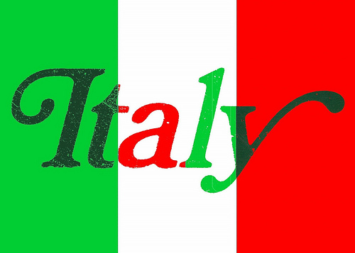

美麗的義大利 米蘭祕境 Como Lake
位於北義大利，鄰近義大利和瑞士交界處，美麗的人字型湖，在阿爾卑斯山麓，素有義大利最美麗的湖泊之稱。早從羅馬時期，科莫湖就是貴族和有錢人退隱時的居所，因此沿湖建有許多別墅和王宮。時至今日，這裡又成了時尚名人設置豪宅的地點，如歌星瑪丹娜、影星喬治柯隆尼、時裝設計大師詹尼凡賽斯、巴西足球名將羅納多、動作巨星席威斯史塔龍、英國維京集團創辦人理查布蘭森等。Como Lake 的湖畔小鎮中包含 : Como , Bellagio , Menaggio , Varenna , Lecco
相關介紹
其他相關影片